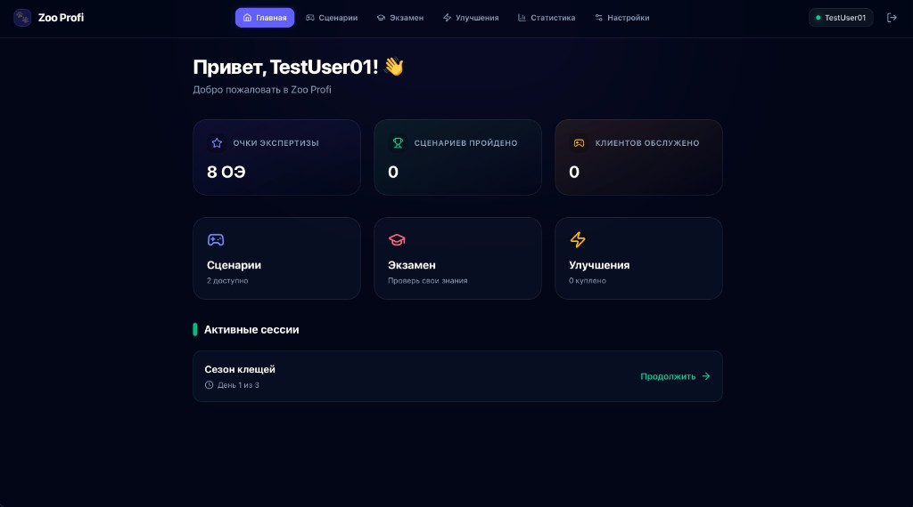
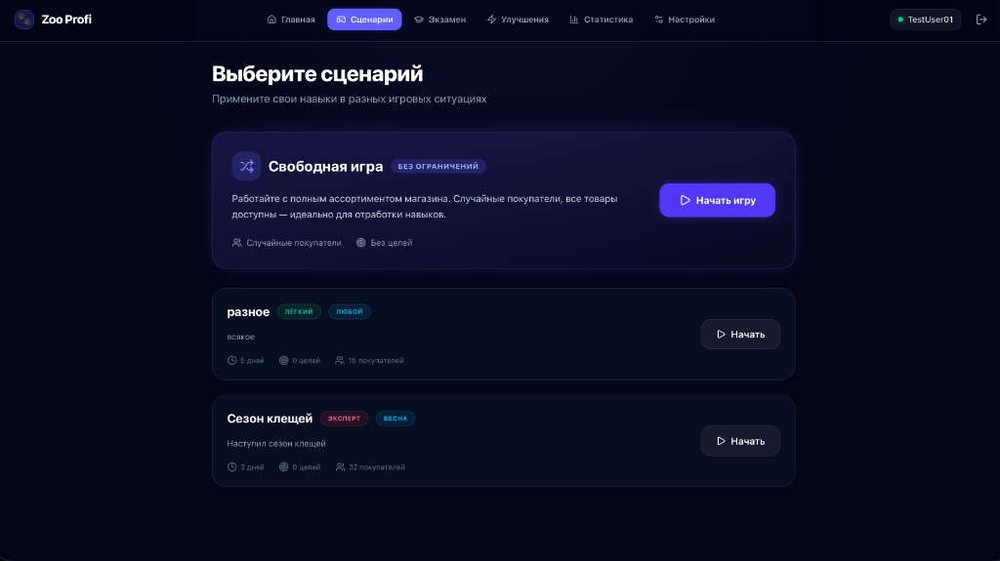
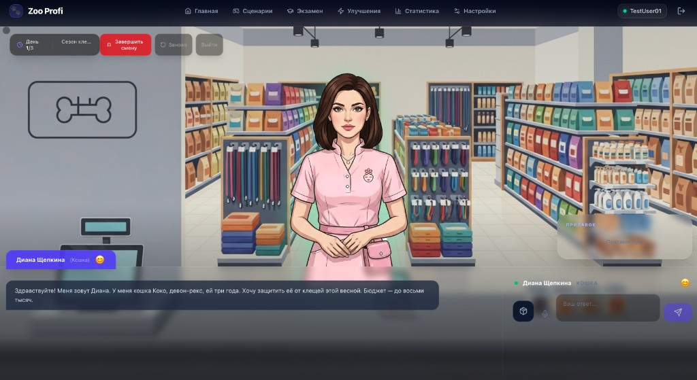
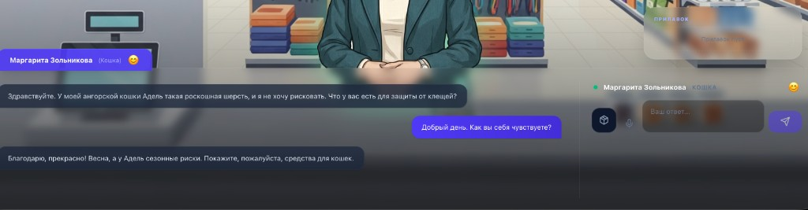
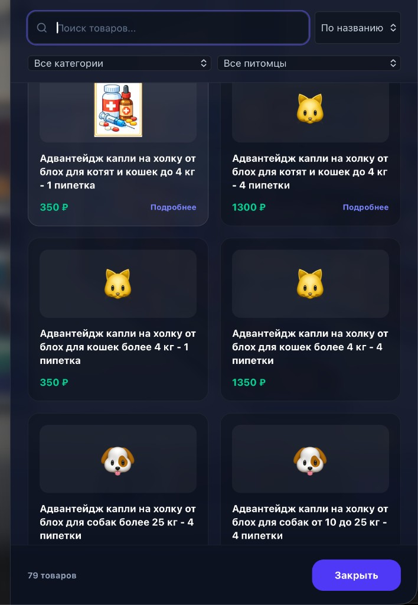

Симулятор зоомагазина для производителей: онлайн-знакомство с брендом, сценарии, экзамен и отработка продаж на AI-покупателях. Дальше — кабинет, сценарий, сессия, функции, преимущества сервиса и демо.
Навигация: стрелки, пробел, свайп · полноэкранный режим внизу справа
Постоянно обучать сотрудников магазинов тому, как консультировать клиентов и продавать ваш SKU: корма, добавки, средства от паразитов, лечебные линейки. Формат «выезд + лекция в каждой точке» дорог по времени и плохо масштабируется. После мероприятия сложно понять, кто реально усвоил материал и умеет довести клиента до покупки.
Один контур обучения на все магазины вместо постоянных разъездов команды бренда.
Одинаковые сценарии, каталог и экзамен — единая планка знаний по полке и аргументации.
Диалог с AI-клиентом и метрики: обучение плюс проверка навыка, а не только презентация.
На app.artofai.ru — AI-покупатели, библиотека сценариев, каталог с импортом из Excel, экзамен по ассортименту, админ-панель и аналитика продаж по сценарию. Знание о товаре доходит до линии продаж и проверяется в диалоге.
Здесь сотрудник выбирает, что делать дальше: «Сценарии» — обучение через игру, диалоги с AI-покупателями и отработка продаж; или «Экзамен» — проверка знаний по ассортименту. В шапке — переходы на главную, статистику, улучшения и настройки. Ниже — карточки и активная сессия (например, «Продолжить» сценарий).

В разделе «Сценарии» участник видит доступные игровые ситуации: подписи к сложности, длительности, числу «посетителей». Можно выбрать сценарий под тему и продукт (например, сезонный блок или «Свободная игра» по полному ассортименту) и нажать «Начать».

После старта сценария начинается игровая сессия: виртуальные покупатели формулируют реалистичные запросы — с деталями о питомце, бюджете и задаче, как при живом общении в магазине (запросы персонажей опираются на реальные обращения покупателей). Продавцу необходимо успешно продать нужный продукт из ассортимента сценария — довести клиента до покупки.

Во время смены продавец может отвечать в чате текстом (поле «Ваш ответ…» и отправка), записать ответ голосом через микрофон и открыть каталог товаров по иконке склада: список позиций сценария с ценами и ссылкой «Подробнее» на описание.


После прохождения игровых сессий AI анализирует все действия пользователя и даёт советы: как исправить ошибки и что можно улучшить в консультации, аргументации и доведении клиента до покупки.
Один контур обучения для всей сети магазинов: сотрудники заходят по ссылке из браузера, без установки отдельного ПО на кассу.
Одинаковые сценарии, каталог SKU (в том числе импорт из Excel), экзамен по ассортименту — одна планка знаний по полке и аргументации во всех точках.
Диалоги с AI-покупателями и игровые смены отрабатывают консультацию и доведение до покупки, а не только просмотр презентации.
Админ-панель, статистика и аналитика по сценарию помогают видеть вовлечённость и динамику обучения, а не «факт проведённого мероприятия».
Можно начать с ограниченного набора SKU и сценариев, расширять библиотеку и усложнять ситуации по мере внедрения.
Запросите показ под ваш бренд и матрицу SKU, или перейдите сразу в симулятор.